The evidence / Source library
Follow the story
back to its source.
Original family scans, public downloads, saved record screenshots and oral histories. Each entry states exactly what we inspected—and what it can establish.
94 catalogue entries
12 family recording files
Research checked
18–19 November 2026
passport
Family document
Doba Milsztejn’s Polish passport
Born 1895, birthplace and residence Opalin; three accompanying children: Rywka, Szul-Beniamin and Pinchas. The photo and title pages are supplied scans.
Description, photograph and children pages; passport series I, no. 354856

passport-title
Family document
Passport identity and residence page
Doba Milsztejn, resident in Opalin; three children. See the accompanying photograph page.

visa
Family document
South African settlement visa
British Passport Office, Warsaw, 21 August 1934. This is a visa, not evidence of the date of arrival in South Africa. The adjoining stamps concern the European journey.
Passport pages 18–19
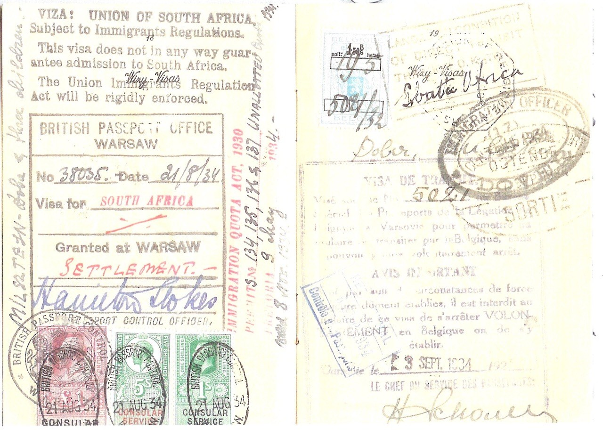
transit
Family document
German transit visa
Warsaw, 3 September 1934. Permission for passage through Germany; it is not a German permit to emigrate from Poland.
Passport page 21
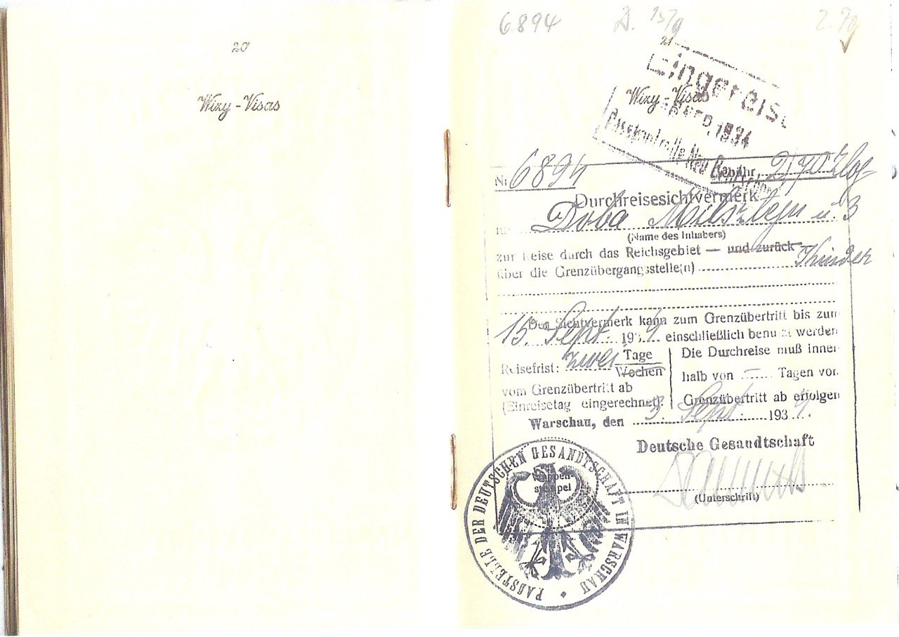
exit
Family document
Polish border-control stamp
Departure stamp at Zbąszyń, 6 September 1934. The low-resolution scan limits finer reading.
Passport page 5
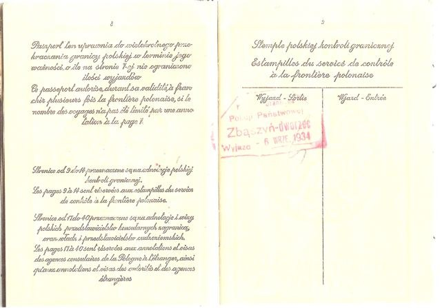
observations
Family document
Passport observations and emigration approval
Passport valid for one journey abroad; Warsaw emigration-inspector stamp, 1 September 1934.
Passport page 7
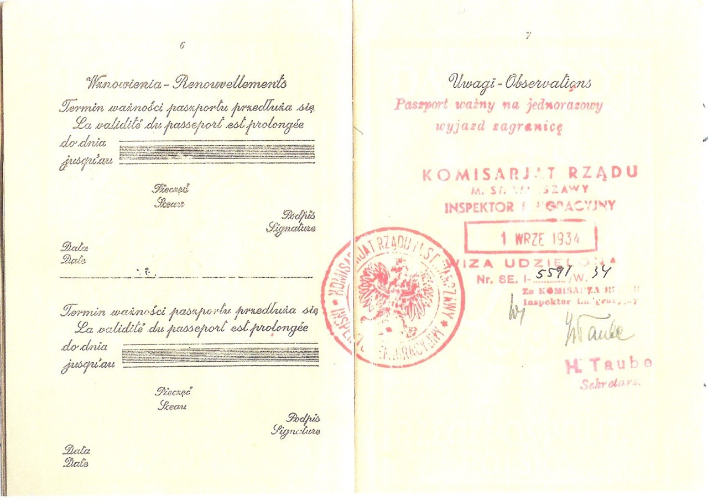
cancelled
Family document
Cancelled visa page
An uncompleted South Africa visa form marked cancelled. Do not mistake it for the completed settlement visa.
Passport page 15
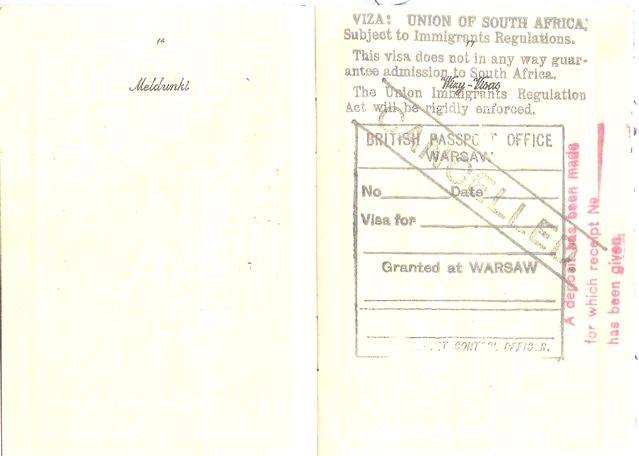
manifest
Archive scan
Gloucester Castle passenger manifest, 1934
London departure, 13 September 1934; Union-Castle line. Doba and the three children contracted to land at Cape Town. The ship’s overall destination is entered as Beira. Ages: 38, 14, 11 and 7.
The National Archives, BT27/1400; P.M.25, alien passengers; digitised by Findmypast; family-supplied scan

riva-id
Family document
Rywka Milsztejn identification card
An identification card, not a passport. Birth: 19 November 1919. The ship and date entry reads Gloucester Castle, 7 October 1934. This places her below fifteen on arrival.
Ethan Cohen’s family history, p.14; embedded scan extracted unchanged

school
Family photograph
Opalin school photograph
Mark tentatively identifies Riva in the front row, second from the right, holding flowers. The identification and date are not independently verified.

nutke-photo
Family photograph
Nutke: portrait and handwritten reverse
Family identification: Nutke Milstein, Moshe’s brother and Riva’s uncle. His formal given name and individual death record remain unknown. The handwriting has not received a verified full translation.
Ethan Cohen’s history, p.11; supplied portrait screenshot is also in the asset register

moshe-photo
Family photograph
Reverse of Moshe’s photograph
Identified by Mark as Moshe Milstein, Doba’s husband. Opalin and a date apparently in 1935 are visible; the dedication and precise day/month need expert reading.
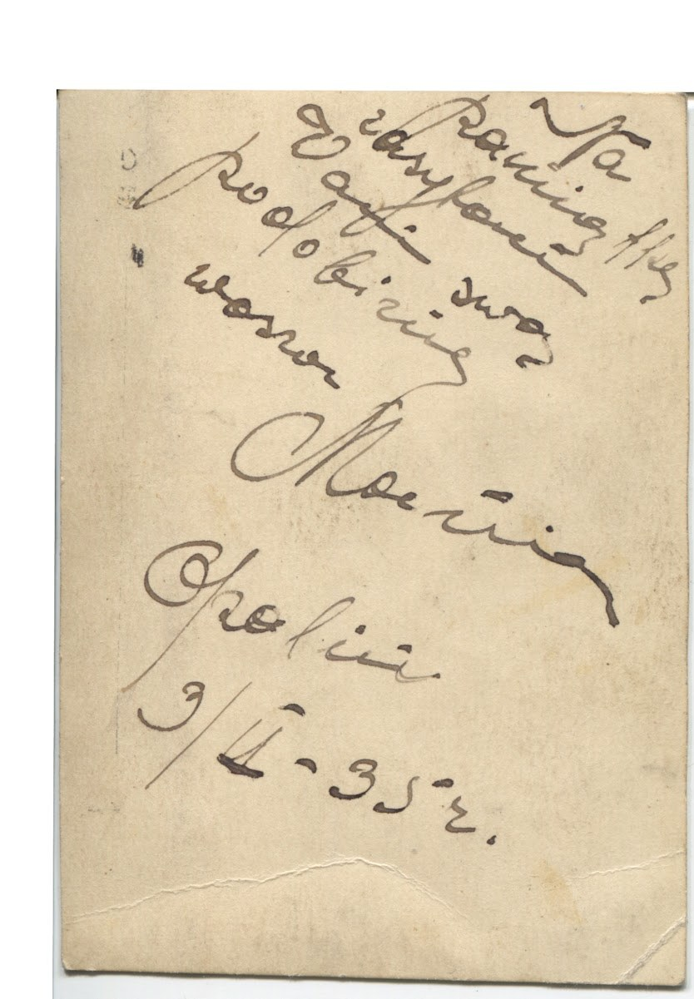
ethan
Family history
Riva Gilinsky — Ethan Cohen’s family history
Undated, 15 pages. Authored by Ethan, Mark’s son. First-person relationships refer to Ethan. Includes an Ancestry tree, family photographs and early research; superseded details are discussed on this site.
Especially pp.1, 6–14; treat as a secondary family compilation
morris
Civil record
Morris Millstein death certificate, 1935
Registration 6091: died 5 September 1935, Johannesburg Hospital; registered 6 September. Age 41, married, Poland-born vegetable hawker; 31 Bezuidenhout Street, Troyeville. Ulcer surgery and haemorrhage fit the testimony, but the record does not name Doba or parents.
Image 3109 of 3222; index 742P-426Z. Local copy is a browser screenshot, not a full-resolution original.
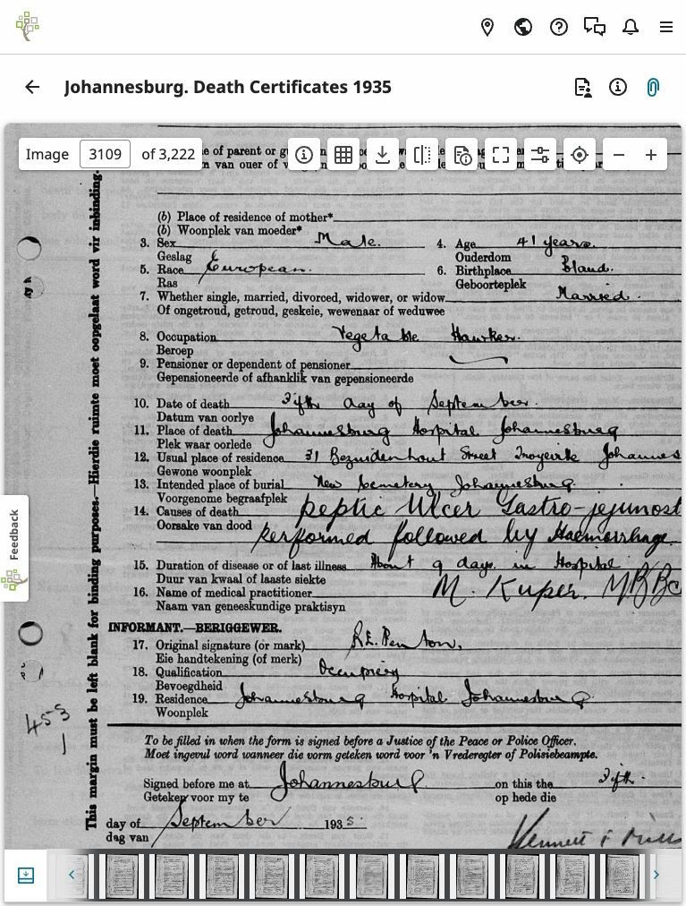
mina-marriage
Civil record
Mina Milstein and Elias Spitalnik, 1937
Johannesburg certificate 1322, 11 August 1937: Mina, 24, Poland-born; Elias, 35, Lithuania-born tailor. Mina’s address matches Morris’s 1935 address. Strong candidate for Minnie; parents not named.
Image 1159 of 2946, image group 008161332; index 6ZC9-N33R. Saved browser screenshot.

aron-grave
Burial record
Aron Milstein gravestone
Death 19 February 1977; Hebrew patronymic identifies father Moshe. Burial register: 20 February, H 2215. Strong match to Arke through the tapes.
Johannesburg Chevrah Kadisha, H 2215
minnie-grave
Burial record
Minnie Spitalnik gravestone
Died 2 August 1997; Menucha daughter of Leib. Burial 4 August 1997, U 818 Ext D.
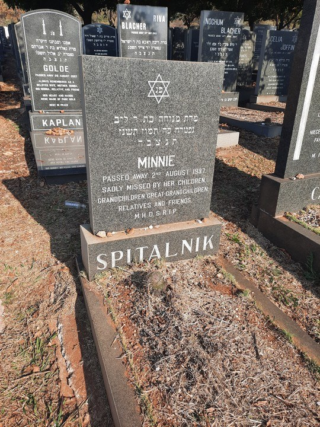
isaac-grave
Burial record
Isaac Slot gravestone
Died 26 July 1952; burial register gives 31 July, B 347. The stone does not individually name his children or establish Bulawayo as his death place.
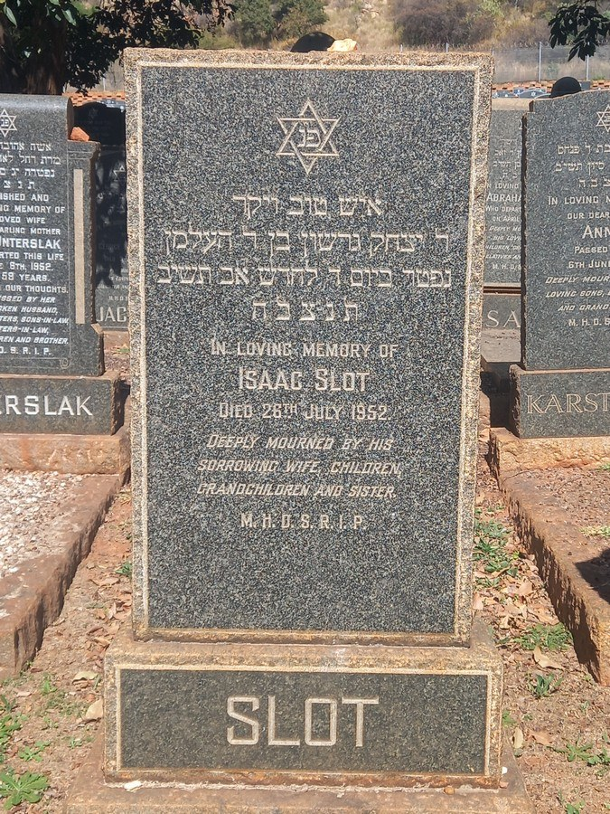
burials
Burial register
Johannesburg Chevrah Kadisha burial search
Live surname searches recorded 18–19 November 2026: Doba, Aron, Minnie, Isaac, Hela and Harry. Hela: Chaya Rivka bas Binyomin, 26 November 2004, E1025 Ext D; Harry: 22 January 1985, adjacent E1025 Ext C. Re-run surname searches; no persistent individual result URLs.
morris-memorial
Memorial index
Morris Millstein memorial index
Westpark Jewish section, 1894–6 September 1935. No photograph, individual grave number or named relatives was found. Its date differs from the civil death date; it is not a gravestone reading.
directory
Contemporary directory
Mendel Lederer’s Warsaw bakery, 1928
Księga adresowa Polski: Lederer Mendel, Ogrodowa 24, under Piekarnie / Boulangers. The year is 1928; 1918 is the printed page number.
Printed p.1918, PDF p.60. A short extract is also bundled.

mendel-a
Page of Testimony
Mendel Lederer: baker testimony
Born 1880 in Opalin, baker, wife Riva; Warsaw before and during the war, death place entered Warsaw ghetto. Submitter Doba Kam, sister-in-law. She has not been identified as Doba Slot.
Yad Vashem 335860; original form inspected, browser screenshot saved
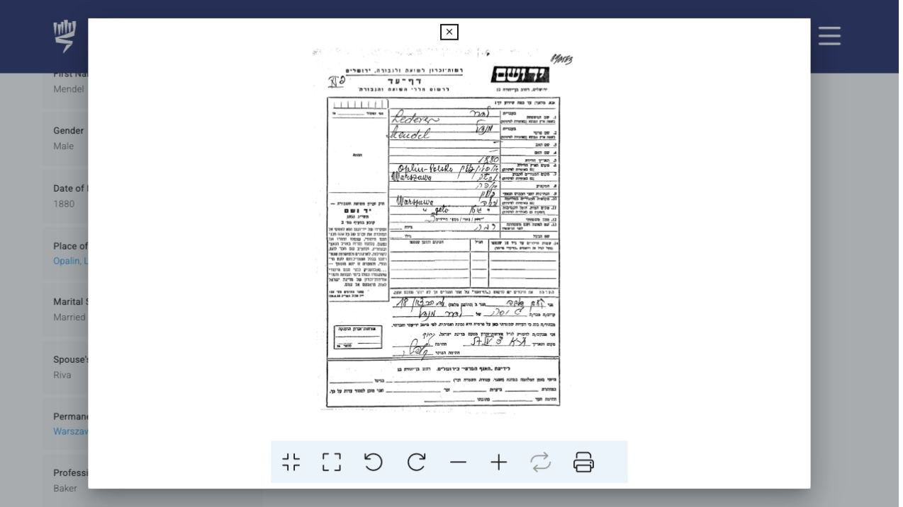
mendel-b
Page of Testimony
Mendel Lederer: second testimony
Born 1885 in Opalin, merchant, wife Rivka Fuks; Warsaw, then Treblinka, 1942. Submitter Menukha Il, relative. Parent and child fields blank. Possible duplicate of the baker, not merged.
Yad Vashem 1118855; original form inspected, screenshot saved
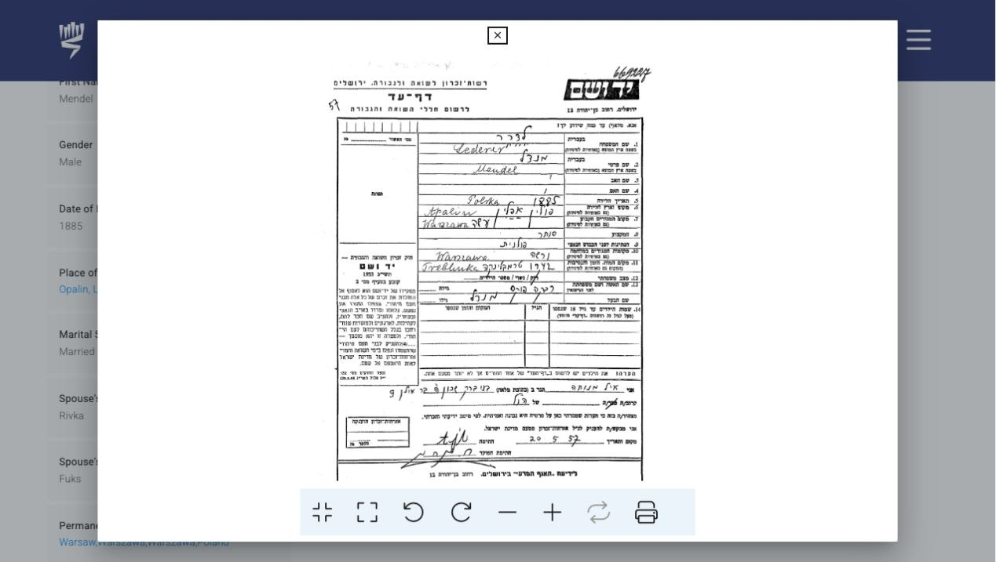
yosefa
Page of Testimony
Jospa / Yosefa Lederer testimony
Włodawa-born, age 45; parents Eliezer and Chaya, husband Beniamin; Opalin residence and death place. Sister Brakha Berland submitted it. The original lists three children; marital handwriting may read widow, whereas the index says married. No death year is supplied. A source-provided scan was also downloaded from the viewer for this edition.
Yad Vashem 2024866; widow reading remains provisional

freida
Page of Testimony
Freida Lederer testimony
Opalin, parents Beniamin and Yosefa, husband Eliahu. Submitter Berka Berland, aunt. Strong candidate for Hela’s sister Frida, without an explicit Hela link.

chuma
Page of Testimony
Chuma / Khuma, born Lederer
Opalin, parents Beniamin and Yosefa, husband Tzvi, married surname unknown. Submitter Brakha Berland, aunt. Possible Nechama from the tape; not established.

pesl
Page of Testimony
Pesl Sosne / Sosna, born Lederer
Opalin-born; husband Asher; Maciejow residence and death. Submitted by daughter Ana Roiter. A collateral lead, not yet proved to be Doba’s sister.
chaya
Page of Testimony
Chaya Dwora Alter, born Milshtein
Born 1882, Opalin; parents Israel and Zissel, husband Naftali. Dorohusk before the war, Maciejow during it; testimony gives death 1941 in Ukraine. Submitted by granddaughter Hadasa Nechushtan.
Combined person 13465449; underlying testimony 1867215

alter-memoir
Published testimony
Yisrael Alter’s Dorohusk memoir
Names mother Chaya Dvora and siblings; immigration to Palestine in 1936, aged twenty. The Warsaw police episode connects it strongly to the filmmaker’s father’s account. Return-visit chronology and number of surviving brothers remain discrepant across accounts.
Dubienka / Skryhiczyn / Dorohusk memorial book, Dorohusk section, p.169
naftali-interview
Published interview
Naftali Alter interviewed by Asaf Nevo
Israel Hayom, 16 January 2020. Identifies father Israel, plasterer then building contractor, and mother Pnina; recounts the father’s Warsaw incident. The son repeats his father’s account, rather than providing a second eyewitness.
naftali-bio
Institutional biography
Naftali Alter — Israel Film Archive
Identifies the filmmaker, born Tel Aviv in 1947. The biography itself does not establish the older Milstein genealogy.
yahad
Historical research
Vyshnivka, formerly Opalin — killing-site profile
Yahad–In Unum gives 2 October 1942, 582 victims, Jewish cemetery, a German unit from Lyuboml assisted by Ukrainian police. Its quoted witness and the linked clip are not safely treated as the same testimony.
Profile 328; quoted testimonies 1441/1442; clip reference 1443U
yahad-video
Witness interview
Opalin witness video 1443U
Six-minute public clip, recorded 25 April 2012. English-subtitle review: title says born 1934; witness says ten; estimate 860 victims differs from profile 582. One-shooter claim is attributed to a friend. No family member is named.
00:02, 00:34, 00:40, 02:56–03:32, 04:36, 05:26–05:34. Link only; full clip not republished.
doba-estate
Government Gazette
Doba Slot estate notice, 2783/77
Original Gazette now downloaded and visually checked: Doba Slot, formerly Milstein, born Ledere; estate 2783/77; 36 Umgeni Road, Emmarentia; Berger & Berger. The notice is not the full estate packet.
Government Gazette 5715, 19 August 1977, printed p.104 / PDF p.104. Full Gazette also bundled.
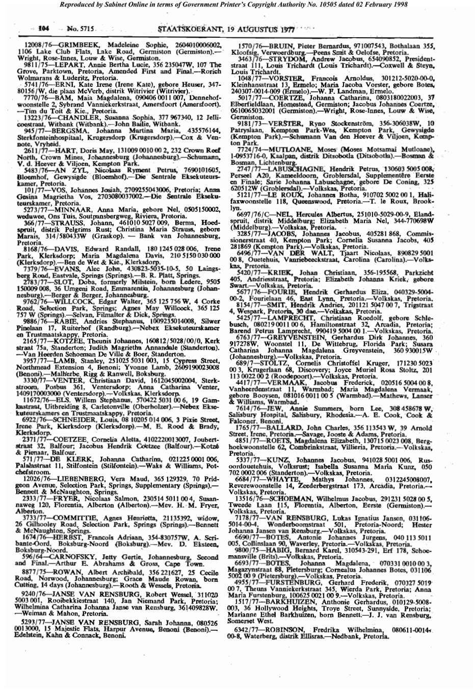
doba-film
Restricted catalogue
Doba’s estate: film-range lead
Film 2276122 / image group 7748578 covers estates 1961/77–360/78. The catalogue explicitly restricts digital access. Numerical inclusion does not prove that the individual packet survives.
FamilySearch catalogue 1162069; no original packet inspected
isaac-estate
Archive catalogue
Isaac Slot estate: TAB MHG 5056/52
Official National Archives description, ZA TAB MHG_0_5056/52_1. No digital object attached; full file not obtained.
annie
Civil / probate record
Annie Slot, born Camberg: death notice
Died 4 August 1941, Johannesburg, 53, Edinburgh-born; husband Isaac, estate agent; children Hayme (reading provisional), Paul and Leslie, born 16 May 1923. Plausible earlier Slot household, not yet joined conclusively to Doba.
Image 1380 of 2092. Saved screenshot; does not assign sex to the children.
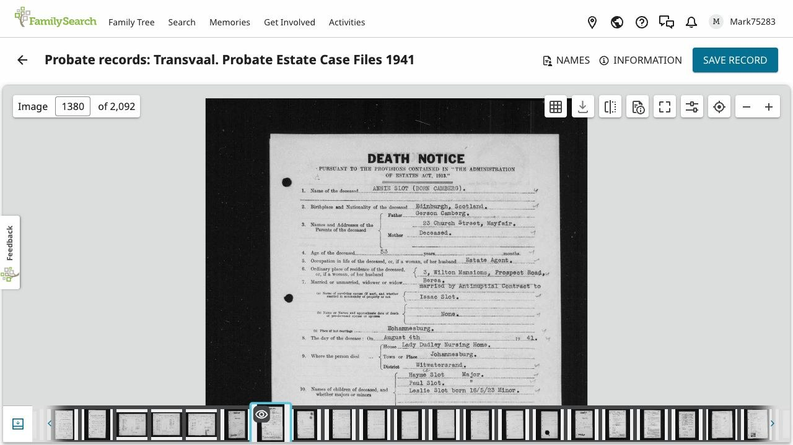
selwyn
Institutional report
Selwyn Segal institutional history
Founded 1956 at Pandora Road, Kensington; moved to Sandringham nine years later. This fits Minnie’s geographical recollection but does not establish Arke’s residency.
2023 annual report, printed p.42 / PDF p.45; separate internally inconsistent “77 years” wording not used
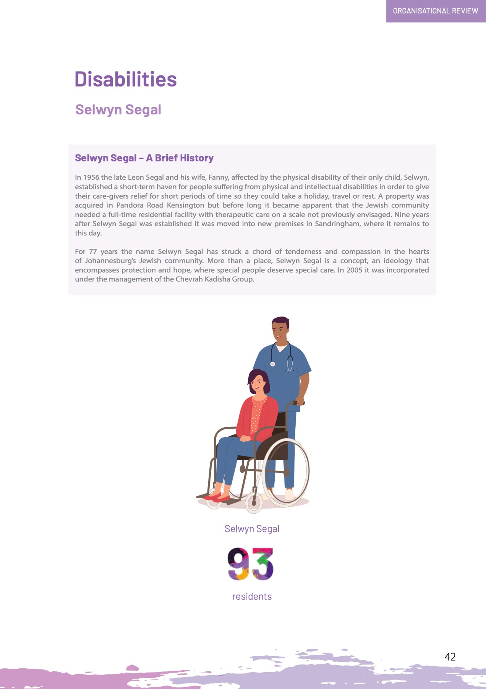
guide1858
Archive guide
Opalin 1858 revision-list archive lead
Kronik and Sack, Some Archival Sources for Ukrainian-Jewish Genealogy (1997), p.62: Opalin, 1858, rs, 118, Z. Z refers to Zhytomyr. The number is not a complete current archival citation; no named family entry inspected.
Printed p.62; title and key pages included in separate extract
guide1860
Archive guide
CAHJP: Opalin 1860–1861 material
2012 guide, p.47, lists genealogical material. Survival, custody, digitisation and named family entries still require checking.
Sources on Polish Jewry at the Central Archives, part 2, p.47
business
Archive catalogue
Milrich Engineering: candidate files
TAB WLD 2664/1955, 168/1956 and 524/1957 pair Philip/Phillip and Benjamin Milstein/Millstein. Candidate business associations only; file contents and outcomes were not inspected.
Search Milstein / Millstein; avoid the unrelated earlier Philip Abe Milstein cases
mark
Family testimony
Mark Cohen’s family recollections
Recollections supplied in November 2026: identity and nicknames; 1986 stay with Israel Alter; Arke and possible Selwyn Segal care; Krugersdorp may have been a cover story. Not independent civil records.
Research correspondence, November 2026; no personal correspondence reproduced
recent
Family conversation
Mark, Natalie and Luba: recent conversation
Supplied text has no timestamps or reliable speaker labels. Recording date described as a couple of days before submission. Statements cannot be assigned individually. Masie means Riva; Krugersdorp is not a verified residence.
Supplied transcription, November 2026; relevant findings incorporated, full recent conversation not republished
hela2
Family recording
Hela Lederer Tape 1 - 2
Introductory interview, apparently 23 March 1999. Opalin, family, Warsaw and migration. Listen before Tape 1 - 1. Automatic working transcription; uncertain names and overlapping speech require listening.
Original family recording; date unknown unless specified
hela1
Family recording
Hela Lederer Tape 1 - 1
Continuation: Bulawayo homes, Harry’s work, family life and Johannesburg. Automatic working transcription; uncertain names and overlapping speech require listening.
Original family recording; date unknown unless specified
opalin1
Family recording
Talking of Opalin - 1
Group memories: market, school, stove, ferry, journey. Riva appears to be addressed; speaker map unverified. Automatic working transcription; uncertain names and overlapping speech require listening.
Original family recording; date unknown unless specified
opalin2
Family recording
Talking of Opalin - 2
Johannesburg, Mayfair, Greenside and Isaac Slot. Automatic working transcription; uncertain names and overlapping speech require listening.
Original family recording; date unknown unless specified
minnie1
Family recording
Minnie Spitalnik - 1
Paternal family, Moshe, Nutke, Arke, migration and family support. Automatic working transcription; uncertain names and overlapping speech require listening.
Original family recording; date unknown unless specified
minnie2
Family recording
Minnie Spitalnik - 2
Appelbaum ancestry, Leibish, Lederer relatives, Opalin economy. Automatic working transcription; uncertain names and overlapping speech require listening.
Original family recording; date unknown unless specified
ben1
Family recording
uncle ben interview - 1
Explicitly names Aaron/Arke, Riva, Ben, Philip and their parents; migration and work. Automatic working transcription; uncertain names and overlapping speech require listening.
Original family recording; date unknown unless specified
ben2
Family recording
uncle ben interview - 2
Germiston arrival, stepfamily, later life; explicitly dated 11 August 2011 in the recording. Automatic working transcription; uncertain names and overlapping speech require listening.
Original family recording; date unknown unless specified
pb1
Family recording
Philip and Ben - Side 1
Apparent alternate copy of Talking of Opalin - 2. Automatic working transcription; uncertain names and overlapping speech require listening.
Original family recording; date unknown unless specified
pb2
Family recording
Philip and Ben - Side 2
Apparent alternate copy of Talking of Opalin - 1. Automatic working transcription; uncertain names and overlapping speech require listening.
Original family recording; date unknown unless specified
pb21
Family recording
Philip and Ben Tape 2 - Side 1
Apparent alternate copy of Talking of Opalin - 1; same sequence, different timestamps. Automatic working transcription; uncertain names and overlapping speech require listening.
Original family recording; date unknown unless specified
pb22
Family recording
Philip and Ben Tape 2 - Side 2
Apparent alternate copy of Talking of Opalin - 2; same sequence, different timestamps. Automatic working transcription; uncertain names and overlapping speech require listening.
Original family recording; date unknown unless specified
minnie-portrait
Family photograph
Minnie Spitalnik: portrait
Minnie identified by Mark Cohen. Date, place and photographer not established.
Supplied and identified by Mark Cohen, 19 November 2026. Original filename: Minnie Spitalnik.jpg

minnie-george
Family photograph
Minnie and her husband George
Mark identifies the couple as Minnie and her husband George. The supplied filename also uses “Menucha and Eltzik”; these labels do not by themselves establish the civil name Elias.
Supplied and identified by Mark Cohen, 19 November 2026. Original filename: Minnie Spitalnik and George - Menucha and Eltzik.jpg

riva-wedding
Family photograph
Riva on her wedding day
Identified by Mark Cohen as Riva at her wedding. Exact date, place and photographer have not been supplied.
Supplied and identified by Mark Cohen, 19 November 2026. Original filename: IMG_0233.jpeg
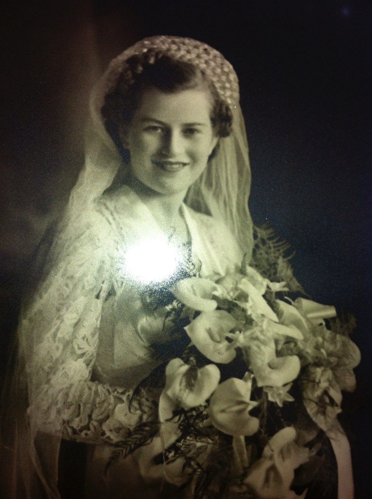
riva-max-mark-wedding
Family photograph
Riva and Max at Mark Cohen’s wedding
Identified by Mark Cohen as Riva (Masie/Mazie) and Max (Mackie) at his wedding. Exact date, place and photographer have not been supplied.
Supplied and identified by Mark Cohen, 19 November 2026. Original filename: Mazie and Mackie at our wedding.jpg

school-scan-14
Family photograph
Opalin school group — Scan 14
Mark Cohen identifies this as a school photograph from Opalin and confirms that Riva appears in it. Her exact position has not been specified for this scan. Date, school name and other people remain unidentified.
Supplied and identified by Mark Cohen. Original filename: Scan 14.jpg
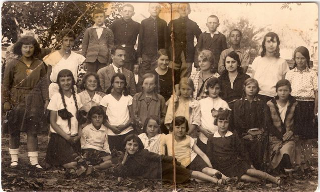
school-scan-12
Family photograph
Opalin school group — Scan 12
Mark Cohen identifies this as a school photograph from Opalin and confirms that Riva appears in it. Her exact position has not been specified for this scan. Date, school name and other people remain unidentified.
Supplied and identified by Mark Cohen. Original filename: Scan 12.jpeg
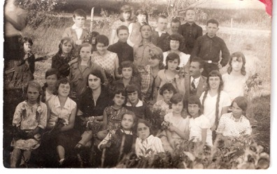
gil-mark
Family testimony
Gilinsky family identifications — Mark Cohen
Mark identifies the people and locations in the supplied photographs, confirms Benoni before Upington, and recalls Max owning Station Jewellers on Station Street, Mayfair. Trading dates remain unknown.
gil-store
Family photograph
Shlomo outside his Upington store
Identified and located by Mark. The visible sign reads S. Gilinsky / General Dealer. Date unknown.

gil-horse
Family photograph
Max riding in Upington
Max (Mackie), identified and located by Mark. Date unknown.

gil-lake
Family photograph
Max and Riva at Florida Lake
Max at left and Riva at right, identified by Mark; Florida Lake location supplied by him. Date unknown.

gil-brothers
Family photograph
Max and Solly Gilinsky
Mark identifies Max at left and Solly at right. The central man, date and occasion are unknown.
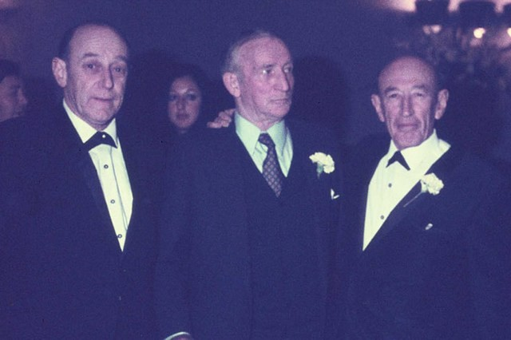
gil-portrait
Family photograph
Portrait of Shlomo Gilinsky
Identified by Mark Cohen as Max’s father. Date and location unknown.
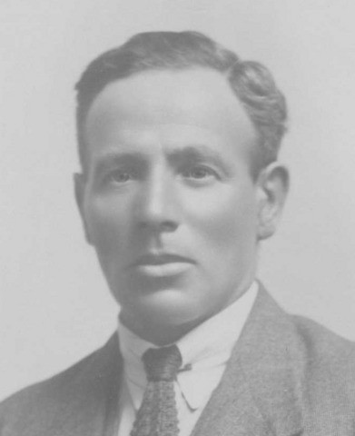
gil-group
Family photograph
Shlomo’s family studio group
Mark identifies Shlomo as present. The seated woman and five younger people remain unidentified; date and place unknown.

gil-three
Family photograph
Shlomo with three children
Shlomo identified by Mark; children’s names and relationship to him unknown. Date and place unknown.

gil-table
Family photograph
Shlomo at a table
Mark identifies Shlomo as present but has not specified which seated man. The other adult, date and location are unknown.

gil-max-marriage
Historical record
Max and Riva’s marriage, 1938
Original inspected: 25 December 1938, Johannesburg, certificate 595. Max 28, general dealer; Riva 19, Poland-born. Saved viewer screenshot, not original image download.
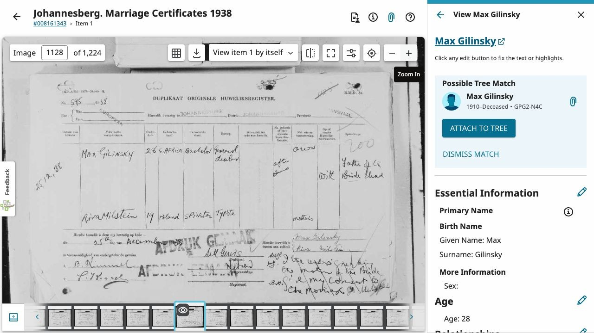
gil-sol-death
Historical record
Solomon’s civil death registration, 1956
Original inspected: 24 August 1956, aged 80, Russia-born, general dealer, married; residence and death at 101 Ninth Avenue, Mayfair. Informant M. Gilinsky is described as person causing burial, not explicitly a son. Exact handwritten birth date not securely read. Saved viewer screenshot.
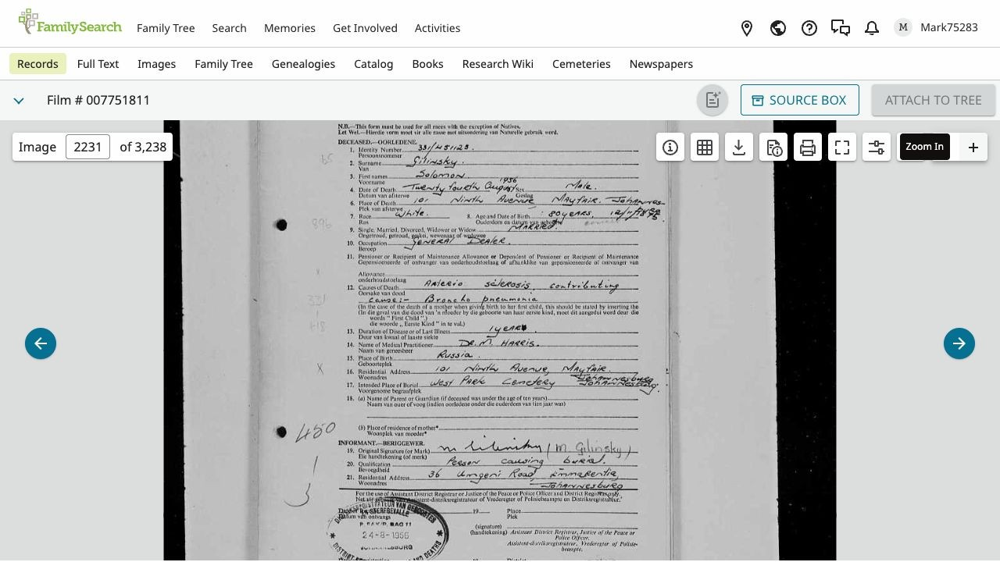
gil-fanny-marriage
Historical record
Fanny and Bennie’s marriage, 1937
25 November 1937, Johannesburg; certificate 1943/1937. Bennie 32, Lithuania-born, bachelor, salesman; Fanny 24, birthplace abbreviated Loc., spinster, saleslady. Both residing Mayfair. Parents not named. Saved viewer screenshot.
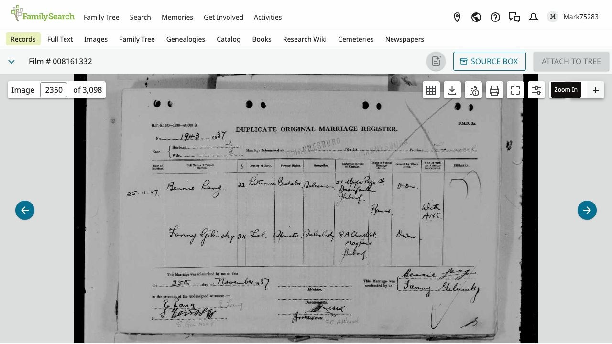
gil-leah-marriage
Historical record
Leah Dinah’s remarriage, 1920
12 May 1920, Johannesburg. Leah Dinah Gilinsky, born Nasatir, 41, divorcee; Jacob Mowsovitz (also indexed Mowsowitz), 55, widower. Strong connection to the 1918 court-case party; identification as Max’s mother awaits a direct family-linking original. Saved viewer screenshot.

gil-annie-marriage
Historical record
Annie and Jack’s marriage, 1929
4 December 1929, Upington, no. 36 of 1929. Jack Spiro 29, Ireland-born, commercial traveller; Annie Gilinsky 21, South Africa-born, resident Upington. Parents not named. Original register image.
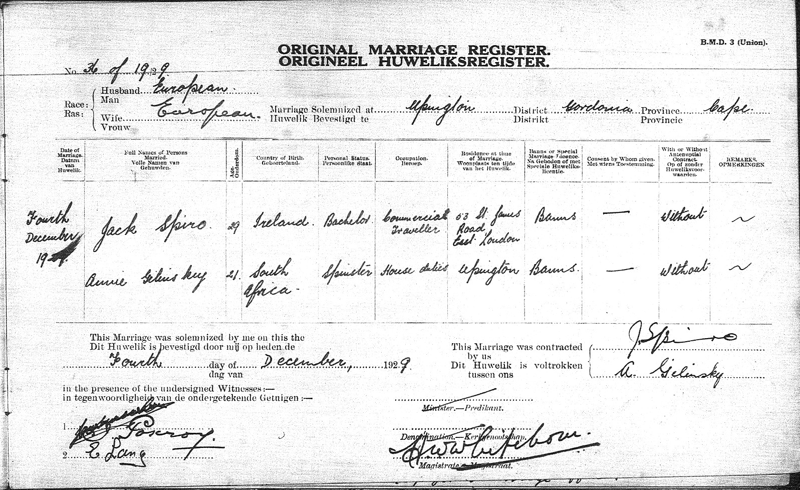
gil-sol-remarriage
Historical record
Solomon and Rachel’s marriage, 1921
17 December 1921, Upington. Solomon Gilinsky 40, divorcee, general dealer; Rachel Skop 28, widow. Candidate remarriage of Max’s father, not yet linked through named children. Original register image.
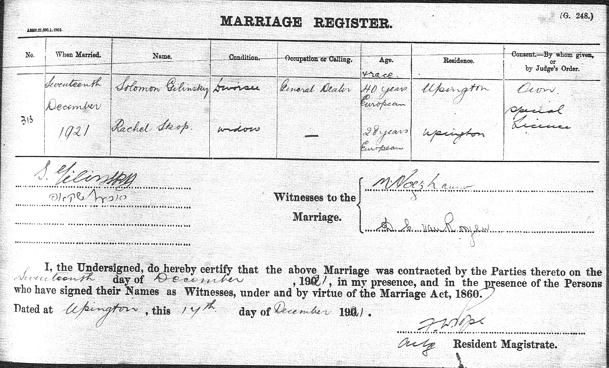
gil-sol-stone
Burial record
Solomon Gilinsky’s gravestone
24 August 1956, aged 79; Hebrew Shlomo son of Eliezer. Strong match to the father’s exact tree death date.
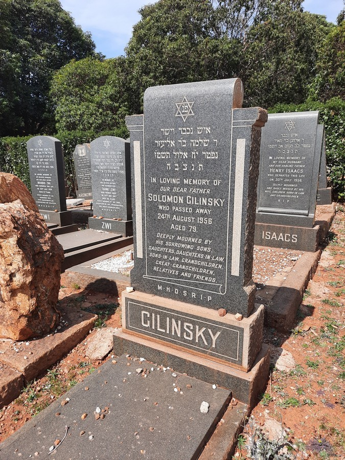
gil-max-stone
Burial record
Max and Riva’s adjoining graves
Riva in foreground, Max alongside. Register: Max died 3 June 2000, buried 4 June, H 1300 Ext B, Mordecai son of Shlomo; Riva died and buried 1 June 2015, H 1300 Ext A.
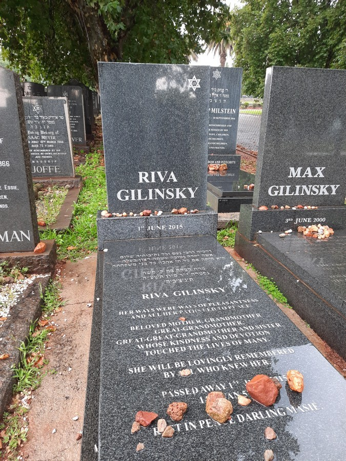
gil-solly-stone
Burial record
Solly Gilinsky’s gravestone
Died 25 December 1978. Hebrew Israel son of Shlomo; names wife Sarah.

gil-sarah-stone
Burial record
Sarah Gilinsky’s gravestone
Died 27 June 1991; Hebrew Sarah daughter of Eliyahu. Maiden surname not on stone.

gil-edie-stone
Burial record
Edith (Edie) Lang’s gravestone
31 January 1956, aged 53; Hebrew father Shlomo; mourned by husband, mother, brothers and sisters. Strong candidate for Max’s sister.

gil-fanny-stone
Burial record
Fanny Lang’s gravestone
Died 23 January 1987; Hebrew name appears Feiga Chaya daughter of Shlomo. Strong candidate for Max’s sister.
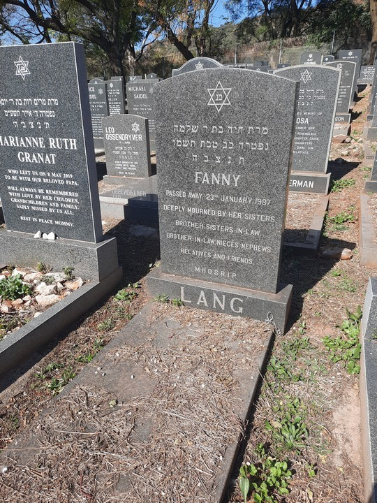
gil-bennie-stone
Burial record
Bennie Lang’s gravestone
Died 7 October 1976; explicitly names wife Fanny. Brother mentioned but not named.

gil-edie-gazette
Historical record
Edith Lang estate notice, 1956
Original Gazette 5653, 23 March 1956, PDF page 114 / printed 110: estate 1336/56, Edith Lang born Gilinsky, housewife of Rand Leases, Florida. Berman & Krawitz, attorneys for executor. Full estate not obtained.
gil-katz
Published family recollection
Gidon Katz — Memories of Mayfair
Katz identifies his mother Milly Gilinsky as one of six, two brothers and four sisters, born in Benoni and raised in Upington. He identifies Solly’s wife as Sara Geyer, associated with the Ochberg group, and recalls Maxie Gilinsky’s watch and jewellery business. This is family recollection; no opening date or Station Jewellers name is given.
gil-estate
Archive catalogue
Solomon Gilinsky estate catalogue
TAB MHG 6258/56; ZA TAB MHG_0_6258/56_1. Strong candidate for father’s estate. Catalogue only; original packet not received. Archive enquiry sent 20 November 2026.
gil-divorce
Archive catalogue
Solomon and Leah Dinah, 1918 court catalogue
TAB WLD 13/1918: Solomon Gilinsky versus Leah Dinah, born Nasatir. Catalogue only. A case title does not prove the outcome; 1920 remarriage describes Leah as divorced.
gil-anne-estate
Historical record index
Anne Spiro’s estate index
Index: born 1908 in Bononi, Johannesburg; died 28 April 2007, Western Cape. Parents Solomon and Lea Gilinsky; spouse Jacob Spiro. Strong Annie candidate; original image unavailable, so details remain index-derived.
gil-solly-marriage
Historical record index
Solly and Sarah’s marriage index
Index: 24 June 1928, Johannesburg; Solly Gilinsky and Sarah Gayer. Original not inspected in this pass. Gayer/Geyer spelling varies between sources.
gil-family-group
Family photograph
An early Gilinsky family group
Shlomo is identified as present by Mark. The seated woman and five younger people remain unnamed; date, location and relationships unconfirmed. Do not assume this depicts all six siblings.

gil-three-children
Family photograph
Shlomo with three children
Shlomo identified by Mark. Standing child at viewer’s left, child on left side of lap and child on right side of lap remain unnamed. Their relationship to him is unknown.

gil-morris-register
Burial record
Morris Lang burial register
Chevrah Kadisha surname Lang search: died 1 May 1973, buried 2 May, B 1276. Edith is B 1275. Consecutive numbers do not prove marriage. No linked Morris stone was displayed.
Surname Lang search, inspected 20 November 2026
moishe-portrait
Family photograph
Moishe Milstein: family portrait
Identified by Mark Cohen as Moishe (Moshe) Milstein, Doba’s husband. Supplied as a one-page PDF titled “Zaida Moishe Milstein.pdf”. Photograph date and place are not established.
Family collection; supplied by Mark Cohen, 19 November 2026

mark-milstein-tree
Family history
Mark Milstein’s family tree, May 2013
Compiled by Mark Milstein, Ben’s son, as identified by Mark Cohen, who supplied this copy. Titled “Our Family — 7 generations and counting”; subtitle “Celebrating Benny’s 90th, may 2013”. A single wide-format chart covering Milstein, Lederer, Gilinsky and Sher connections and descendants. Dates and relationships are family-history entries, not independently verified civil records. It reflects the family as recorded in 2013.
One-page chart; original supplied filename Milstein_full.pdf. Supplied by Mark Cohen, 19 November 2026.

No sources match. Try a name variant or clear the type filter.